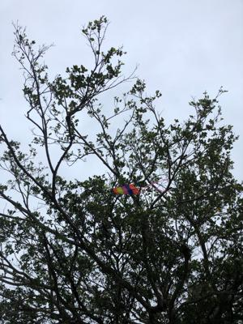

うるがいの話 ある日
最新: Slack【うるがいの話 ある日】とは 一日だけのプログです
『うるがいの話』の最新一日だけのプログで、通信料が少なく経済的だ。カニの画像をクリックすると全ての日付が載る『うるがいの話』サイトを表示します
|
|
【うるがいの話】 うるがい(ｳﾙｶﾞｲ urugai)とは、『もずくがに』の名前でとても大きくなります。 |
|---|---|
|
|
【カミマヤーの話】 猫のことを方言でマヤーといいます。カミマヤー（kamimayaa）とは、神の猫のことです。 |
|
【タナガーの話】 たながー（ﾀﾅｶﾞｰtanagaa）とは手長えびのことで、何種類かあり大きいのは車 エビぐらいになります。 |

|
【ぶながぁの話】 ぶながー(bunagaa)とは、赤い髪の毛、赤い身体、そして身長は１ｍ２０ｃｍ ぐらい、川の蟹を食べているの目撃された。場所は沖縄県国頭郡大宜味村のと ある村僕の隣近所に住んでいる爺さんから、聞いた話です。 |
|
|
【ギーマの話】 ギーマ(giima)とは、山原の里山に咲くスズランに似た、 花を付けます。実は食べられます、 気が付くと口の周りが紫になっています。 |
2022年01月18日 (火）Slack
17:32

以前に岡山に住んでいました、一年ほど新倉敷に居ましたと、岡山の人達に話
す。と、『まだ寝ているの！』とヨメに起こされる。時計を見ると７時前であ
る。おー、珍しく朝寝をした。朝ドラの影響か・・・、オダギリジョーが演奏
するトランペットの曲「On the Sunny Side of the Street」を聴いてトラン
ペットだとニニ・ロッソの「夜空のトランペット (Il silenzio) 」がいい。
そして、早速楽譜ソフトに登録する作業を始める。ネットで曲を調べ苦労の末
昨日の寝る前に８割ほど仕上げる、このせいかも。そして１０時頃になりスマ
ホをみると『リマインダー: Slack チーム「アイランドコネクト沖縄」への招
待が届いています』が９時に届いていた。コニョコニョSlackをパソコンにイン
ストール、令和３年那覇市というチャネルに参加する。画面で登録者は２６名
と分かる、百名の枠だが参加者は少ない。Slackは、アメリカの企業が提供し
ているビジネスチャットツールとのこと。ＺＯＯＭと同じくかなり前から利用
されているようだ。前の職場は、執務室でのスマホは持ち込み禁止！、外部と
のネットワーク接続も禁止の環境だったのでガラバゴスである。コロナ禍で環
境は変わったのだろうか、リモートワークを求められる世の中だから少しは変
わったかも、とホームページを覗くと１月に２店舗で感染者の発生者がでたと
報告されている、職場は大変だろうな。
１６時０２分 ビットコインの総資産 ￥１４、０７０↓